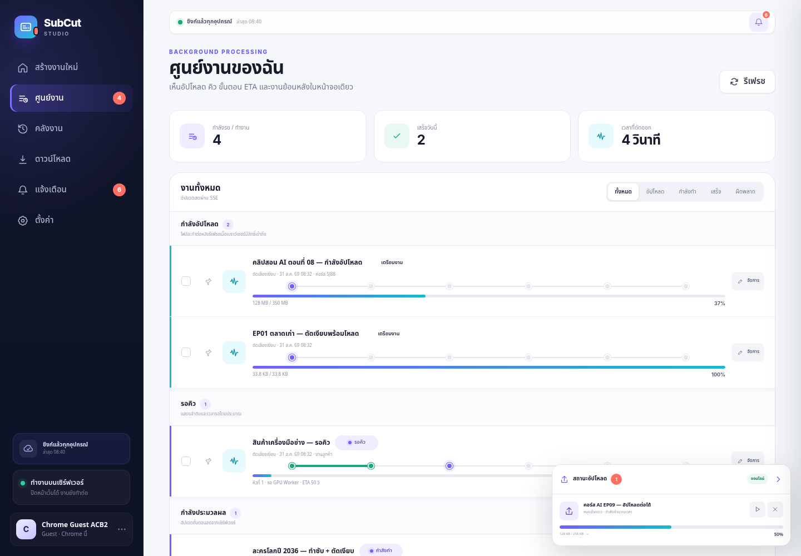
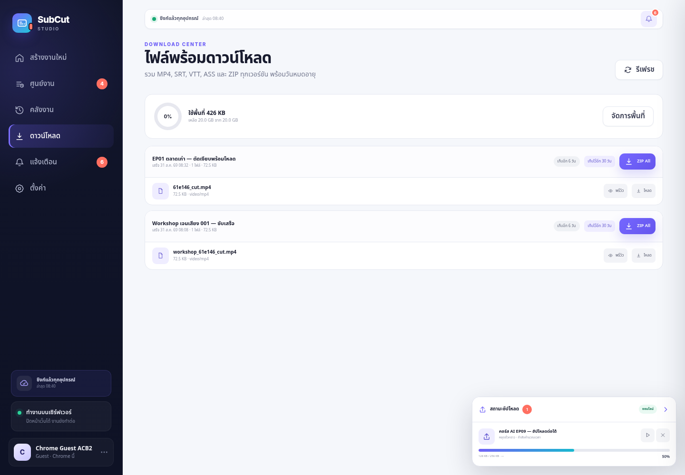
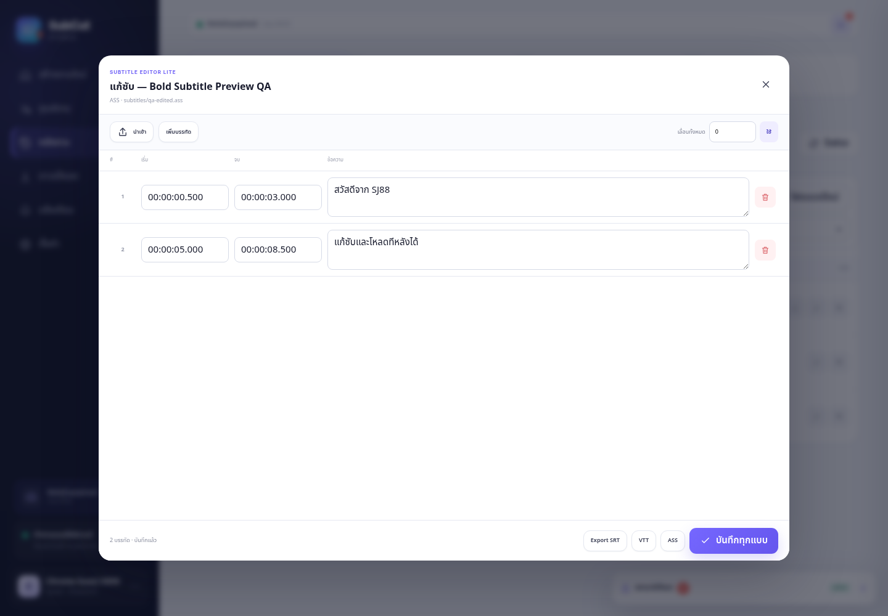
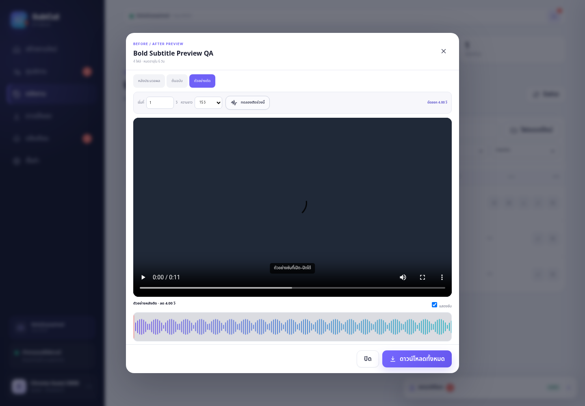
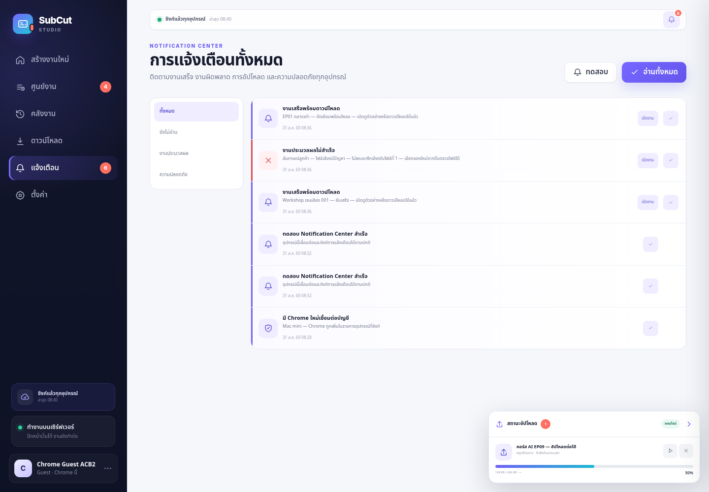
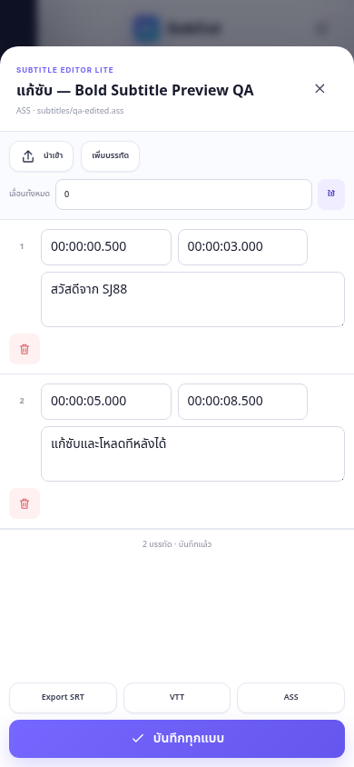

SJ88 SubCut Studio 2.3 Bold
QA ครอบคลุม Live API, FFmpeg จริง, Web/Worker แยกโปรเซส และ UI Desktop/Mobile
4/4Subtitle unit tests
0Console / Page errors
0 pxHorizontal overflow
หน้าจอที่ตรวจแล้ว






ผลทดสอบหลัก
| ส่วน | ผล | หลักฐาน |
|---|---|---|
| Bold Hub / Library / Sync | PASS | api/bold-v2.3-integration.json |
| Desktop / Mobile UI | PASS | api/bold-browser-qa.json |
| Subtitle + 15s Trim Preview | PASS | api/subtitle-editor-trim-preview.json |
| Editor/Preview Browser UI | PASS | api/bold-editor-preview-browser-qa.json |
| Separated Web / Worker | PASS | api/split-web-worker.json |
Fidelity checks
ตรวจเทียบระบบภาพเดิมกับรุ่น Bold ผ่านภาพจริง: brand/sidebar, palette, typography, hierarchy ของสถานะ, modal spacing, navigation state, responsive collapse และข้อความเหนือ fold ไม่มี drift ที่เป็นสาระสำคัญ
Deployment notes
Whisper GPU ไม่ได้รันในเครื่อง QA รอบนี้; Docker CLI ไม่มีจึง parse Compose YAML และทดสอบ topology ด้วยโปรเซสจริง; LINE/Email เป็น provider preferences สำหรับต่อระบบส่งขององค์กร